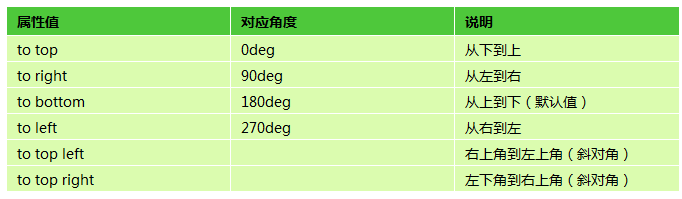
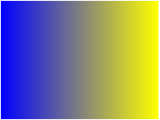

语法：
background:linear-gradient(方向，开始颜色，结束颜色);
说明：
线性渐变，指在一条直线上进行渐变，在网页中大多数渐变效果都是线性渐变
第一个参数：指定渐变方向

第二个和第三个参数，表示颜色的起始点和结束点，可以有多个颜色值。
使用方法：
background:linear-gradient(to right,blue,yellow);; /*从左到右，蓝色渐变到黄色*/

兼容性：
- 浅绿 = 支持
- 红色 = 不支持
- 粉色 = 部分支持
| IE | Firefox | Chrome | Safari | Opera | iOS Safari | Android Browser | Android Chrome |
|---|---|---|---|---|---|---|---|
| 6.0-9.0 #2 | 2.0-3.5 | 4.0-9.0 -webkit- #1 |
3.1-3.2 | 15.0+ | 3.2-4.3 -webkit- #1 |
2.1-3.0 -webkit- #1 |
10.0-25.0 -webkit- #1 |
| 10.0+ | 3.6-15.0 -moz- |
10.0-25.0 -webkit- |
4.0-5.0 -webkit- #1 |
5.0-6.1 | 4.0-4.3 -webkit- |
26.0+ | |
| 16.0+ | 26.0+ | 5.1-6.0 -webkit- |
7.0+ | 4.4+ | |||
| 6.1+ |
- 使用过时的语法：-webkit-gradient(linear,…)
事例：
background-image:linear-gradient(to left, red, orange,yellow,green,blue,indigo,violet);